正文
day01
1.1 数据库基本概念
数据库（Database）是按照数据结构来组织、存储和管理数据的建立在计算机存储设备上的仓库。
数据库：存储数据的仓库。
数据库分类
-
网络数据库
- 网络数据库是指把数据库技术引入到计算机网络系统中，借助于网络技术将存储于数据库中的大量信息及时发布出去；面计算机网络借助于成熟的数据库技术对网络中的各种数据进行有效管理，并实现用户与网络中的数据库进行实时动态数据交互。
-
层级数据库
- 层次结构模型实质上是一种有根结点的定向有序树（在数学中"树"被定义为一个无回的连通图）。
-
关系数据库
- 关系数据库，是建立在关系模型基础上的数据库，借助于集合代数等数学概念和方法来处理数据库中的数据。
数据库的另外一种区分方式，基于存储介质。存储介质分为两种，磁盘和内存。
-
关系型数据库，存储在磁盘中。
-
非关系型数据库：存储在内存中。
关系型数据库
-
基本概念
-
关系数据库，是建立在关系模型基础上的数据库，借助于集合代数等数学概念和方法来处理数据库中的数据。现实世界中的各种实体以及实体之间的各种联系均用关系模型来表示。关系模型是由埃德加 · 科德于 1970 年首先提出的，并配合“科德十二定律”。现如今虽然对此模型有一些批评意见，但它还是数据存储的传统标准。关系模型由关系数据结构、关系操作集合、关系完整性约束三部分组成。
-
关系数据结构：指的数据以什么方式来存储，是一种二维表的形式存储。
本质：二维表
姓名 年龄 身高 体重 张三 30 187 70 李四 40 -
关系操作集合：如何来关联和管理对应的存储数据，SQL 指令
获取张三的年纪：已知条件为姓名
1
Select 年龄 from 二维表 where 姓名 = 张三; -
关系完整性约束：数据内部有对应的关联关系，以及数据与数据之间也有对应的关联关系
- 表内约束：对应的具体列只能放对应的数据（不能乱放）
- 表间约束：自然界各实体都是有着对应的关联关系（外键）
-
典型关系型数据库
Oracle、DB2、Microsoft SOL Server、Microsoft Access、 MysOL、 SQLite.
小型关系型数据库：Microsoft Access，SQLite
中型关系型数据库：SQLServer，MySQL
大型关系型数据库：Oracle，DB2
1.2 SQL 介绍
SQL 基本介绍
结构化查询语言（Structured Query Language）简称 SQL，是一种特殊目的的编程语言，是一种数据库查询和程序设计语言，用于存取数据以及查询、更新和管理关系数据库系统;同时也是数据库脚本文件的扩展名。
SQL 就是专门为关系型数据库而设计出来的。
SQL 分类
-
数据查询语言（DQL：Data Query Language）：其语句，也称为“数据检索语句”，用以从表中获得数据，确定数据怎样在应用程序给出。保留字 SELECT 是 DQL（也是所有 SQL）用得最多的动词，其他 DQL 常用的保留字有 WHERE，ORDER BY，GROUP BY 和 HAVING。这些 DQL 保留字常与其他类型的 SQL 语句一起使用。
专门用于查询数据：代表指令为 select/show
-
数据操作语言（DML：Data ManipulationLanguage）：其语句包括动词 INSERT，UPDATE 和 DELETE。它们分别用于添加，修改和删除表中的行。也称为动作查询语言。
专门用于写数据：代表指令为 insert，update 和 delete
-
事务处理语言（TPL）：
它的语句能确保被 DML 语句影响的表的所有行及时得以更新。TPL 语句包括 BEGIN，TRANSACTION，COMMIT 和 ROLLBACK。
-
数据控制语言（DCL）：
它的语句通过 GRANT 或 REVOKE 获得许可，确定单个用户和用户组对数据库对象的访问。 某些 RDBMS 可用 GRANT 或 REVOKE 控制对表单个列的访问。
专门用于权限管理：代表指令为 grant 和 revoke
-
数据定义语言（DDL）：
其语句包括动词 CREATE 和 DROP。在数据库中创建新表或删除表（CREAT TABLE 或 DROPTABLE），为表加入索引等。DDL 包括许多与人数据库目录中获得数据有关的保留字。它也是动作查询的一部分。
专门用于结构管理：代表指令 create 和 drop()
1.3 MySQL 基本介绍
MySQL 是一个关系型数据库管理系统，由瑞典 MySQL AB 公司开发，目前属于 Oracle 旗下产品。MySQL 是最流行的关系型数据库管理系统之一，在 WEB 应用方面，MySQL 是最好的 RDBMS（Relational Database Management System，关系数据库管理系统）应用软件。
AB 公司被 Sun 公司收购 → Oracle 又收购了 sum 公司
- MySQL 是一种开源免费的数据库产品
- MySQL 对 PHP 的支持是最好（wamp 或者 lamp）
- MySQL 中用到的操作指令就是 SQL 指令
启动和停止 MySQL 服务
安装 MySQL。
MySQL 是一种 C/S 结构：客户端和服务端
服务端对应的软件：MySQLd.exe
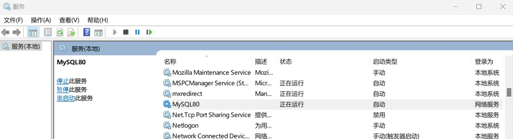
确保这个服务被启动。
登录和退出 MySQL 系统
通过客户端（MySQL.exe）与服务器进行连接认证，就可以进行操作通常，服务端与客户端不在同一台电脑上。
登录
找到 MySQL.exe（通过 cmd 控制台：如果在安装的时候指定了 MySQL.exe 所在的路径为环境变量，就可以直接访问；如果没有，那么就必须进入到 MySQL.exe 所在路径）
直接打开 MySQL 8.0 Command Line Client。
或者在命令行输入：
1 | |
1 | |
以密文形式输入密码：
1 | |
默认为 localhost ，可简写为：
1 | |
1 | |
退出
断开与服务器的连接：通常 MySQL 提供的服务器数量有限，一旦客户端用完，建议就应该断开连接。
建议方式：使用 SQL 提供的指令
-
Exit;exit 带分号 -
\q;quit 缩写 -
Quit;
2.1 MySQL 服务端架构
MySQL 服务端架构有以下几层构成：
- 数据库管理系统（最外层）：DBMS，专门管理服务器端的所有内容
- 数据库（第二层）：DB，专门用于存储数据的仓库（可以有很多个）
- 二维数据表（第三层）：Table，专门用于存储具体实体的数据
- 字段（第四层）：Field，具体存储某种类型的数据（实际存储单元）。
数据库中常用的几个关键字
Row：行。 Column：列（field）
2.2 SQL 基本操作——库操作（创建数据库）
数据库是数据存储的最外层（最大单元）
创建数据库
基本语法：
1 | |
1 | |
1 | |
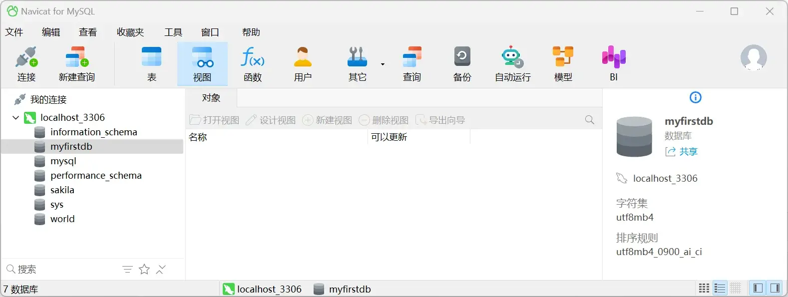
库选项：数据库的相关属性
字符集：charset 字符集，代表着当前数据库下的所有表存储的数据默认指定的字符集（如果当前不指定，那么采用 DBMS 默认的）。
校对集：collate 校对集
1 | |
1 | |
1 | |
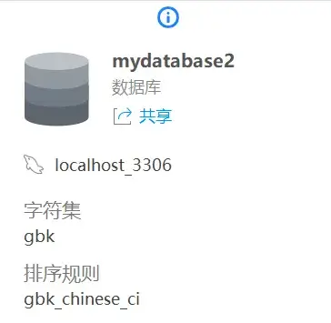
2.3 SQL 基本操作——库操作（显示数据库）
-
显示全部
1
show databases;1
2
3
4
5
6
7
8
9
10
11
12
13+--------------------+
| Database |
+--------------------+
| information_schema |
| mydatabase2 |
| myfirstdb |
| MySQL |
| performance_schema |
| sakila |
| sys |
| world |
+--------------------+
8 rows in set (0.02 sec)Note
系统数据库：
information_schema、MySQL、performance_schema、sys。- 用于管理和优化 MySQL 服务器。
示例数据库：
sakila和world。- 用于学习 SQL 和测试。
用户数据库：
mydatabase2和myfirstdb。- 自定义数据存储，由用户自行设计和管理。
-
显示部分
基本语法：
1
show databases like '匹配模式';_：匹配当前位置单个字符%：匹配指定位置多个字符
-
获取以
my开头的全部数据库：'my%'1
show databases like 'my%';1
2
3
4
5
6
7
8+----------------+
| Database (my%) |
+----------------+
| mydatabase2 |
| myfirstdb |
| MySQL |
+----------------+
3 rows in set (0.00 sec) -
获取
m开头，后面第一个字母不确定，最后为database2的数据库：'m_database2'1
show databases like 'm_database2';1
2
3
4
5
6+------------------------+
| Database (m_database2) |
+------------------------+
| mydatabase2 |
+------------------------+
1 row in set (0.00 sec) -
获取以
database结尾的数据库：'%database'1
show databases like '%database2';1
2
3
4
5
6+-----------------------+
| Database (%database2) |
+-----------------------+
| mydatabase2 |
+-----------------------+
1 row in set (0.00 sec) -
查看数据库创建语句：
1
show create database mydatabase2;1
2
3
4
5
6
7+-------------+--------------------------------------------------------------------------------------------------------+
| Database | Create Database
|
+-------------+--------------------------------------------------------------------------------------------------------+
| mydatabase2 | CREATE DATABASE `mydatabase2` /*!40100 DEFAULT CHARACTER SET gbk */ /*!80016 DEFAULT ENCRYPTION='N' */ |
+-------------+--------------------------------------------------------------------------------------------------------+
1 row in set (0.01 sec)
2.4 SQL 基本操作——库操作（选择+修改+删除）
选择数据库
为什么要选择数据库？因为数据是存储到数据表，表存在数据库下。如果要操作数据，那么必须进入到对应的数据库才行。
基本语法：
1 | |
1 | |
1 | |
修改数据库
修改数据库字符集（库选项）：字符集和校对集
基本语法：
1 | |
1 | |
1 | |
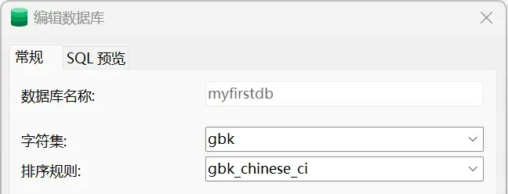
是否可以修改数据库名字？MySQL 5.5 之前是可以修改的 rename 命令，但是 5.5 之后就不可以。
删除数据库
基本语法：
1 | |
删除虽简单，但是切记要做好安全操作：确保里面数据没有问题。（重要）
删除数据库之后：对应的存储数据的文件夹也会被删除（opt 文件也被删除）
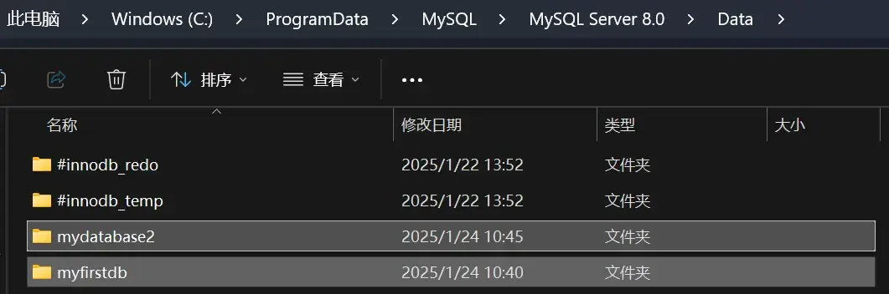
3.1 SQL 基本操作——表操作（创建数据表）
1 | |
1 | |
1 | |
1 | |
1 | |
1 | |
1 | |
3.2 SQL 基本操作——表操作（多维度显示表）
显示数据表
每当一张数据表创建，那么就会在对应的数据库下创建一些文件（与存储引擎有关），表示数据表的结构
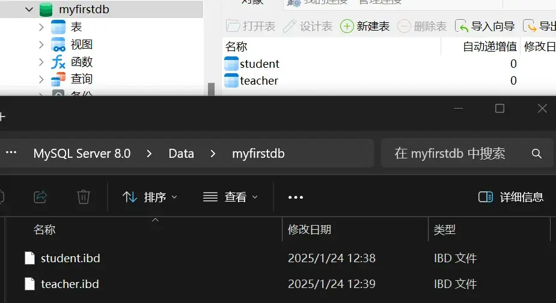
ibdata 中存储所有 innodb 存储引擎对应的表数据：
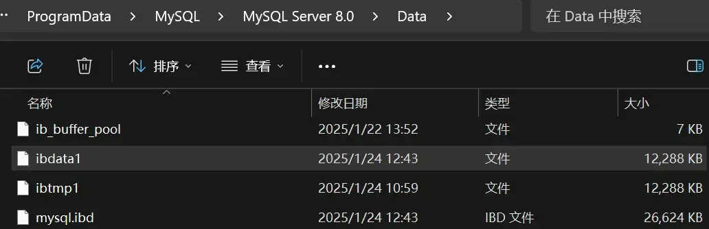
显示所有表，基本语法：
1 | |
1 | |
匹配显示表
基本语法：
1 | |
显示表结构
本质含义：显示表中所包含的字段信息（名字，类型，属性等）
1 | |
1 | |
1 | |
1 | |
1 | |
1 | |
MySQL 中有多种语句结束符。
-
;与\g所表示的效果是一样的，都是字段在上排横着，下面跟对应的数据 -
\G字段在左侧竖着，数据在右侧横着
1 | |
1 | |
4.1 SQL 基本操作——表操作（多维度修改表）
修改表选项
1 | |
1 | |
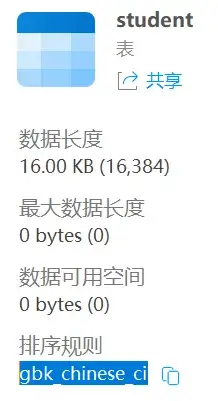
重命名表
1 | |
1 | |
添加字段
1 | |
1 | |
1 | |
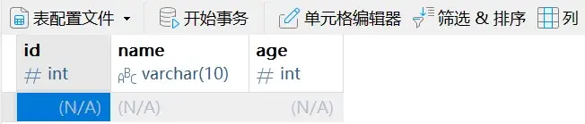
修改表结构
1 | |
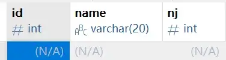
删除表结构
1 | |
5.1 SQL 基本操作——数据操作（插入数据）
插入操作
1 | |
本质含义：将数据以 SQL 的形式存储到指定的数据表（字段）里面
基本语法：
1 | |
注意：后面（values 中）对应的值列表只需要与前面的字段列表相对应即可（不一定与表结构完全一致）
1 | |
注意：字段列表并不一定非要有所有的表中字段。
1 | |
基本语法：向表中所有字段插入数据（值列表必须与字段列表一致）。
1 | |
1 | |
查询操作
查询表中所有数据：
1 | |
1 | |
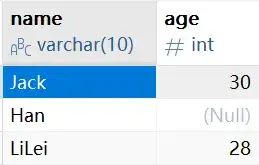
查询表中部分字段：
1 | |
简单条件查询数据：
1 | |
1 | |
1 | |
删除操作
基本语法：
1 | |
1 | |
修改操作
1 | |
6.1 字符集——简介
字符编码概念
字符（Character）是各种文字和符号的总称，包括各国家文字、标点符号、图形符号、数字等。
字符编码（character code）是计算机针对各种符号，在计算机中的一种二进制存储代号。
字符集概念
字符集（Character set）是多个字符的集合，字符集种类较多，每个字符集包含的字符个数不同。
常见字符集名称：ASCII 字符集、GB2312 字符集、BIG5 字符集、GB18030 字符集、Unicode 字符集等。计算机要准确的处理各种字符集文字，需要进行字符编码，以便计算机能够识别和存储各种文字。中文文字数目大，而且还分为简体中文和繁体中文两种不同书写规则的文字，而计算机最初是按英语单字节字符设计的，因此，对中文字符进行编码，是中文信息交流的技术基础。
6.2 MySQL 字符集设置
1 | |
1 | |
| 字段名 | 含义 | 当前值 | 解释 |
|---|---|---|---|
character_set_client |
客户端发送到 MySQL 的数据所使用的字符集 | gbk |
客户端发送的数据被认为是 GBK 编码。 |
character_set_connection |
客户端与服务器之间的连接数据转换使用的字符集 | gbk |
客户端发送的数据会被解析为 GBK 编码。 |
character_set_database |
当前默认数据库使用的字符集 | gbk |
数据库存储的数据编码为 GBK。 |
character_set_filesystem |
用于处理文件名的字符集（如文件名、目录名） | binary |
文件名按二进制格式存储和处理，不受字符集影响。 |
character_set_results |
从服务器返回给客户端的数据的字符集 | gbk |
查询结果会被转换为 GBK 编码后发送给客户端。 |
character_set_server |
服务器端的默认字符集 | utf8mb4 |
服务器默认使用 UTF-8（支持 4 字节 Unicode）的字符集，适合国际化需求。 |
character_set_system |
MySQL 系统表（如 MySQL 数据库中的表）使用的字符集 |
utf8mb3 |
系统表使用 UTF-8（3 字节 Unicode）的字符集。 |
character_sets_dir |
字符集定义文件所在的目录路径 | C:\Program Files\MySQL\MySQL Server 8.0\share\charsets\ |
表示字符集配置文件的存储路径，用于 MySQL 的字符集配置和支持。 |
修改变量：
1 | |
day02
1.1 列类型——整型
| 类型 | 说明 |
|---|---|
| tinyint | 迷你整形，系统采用一个字节来保存的整形：一个字节=8 位，最大能表示的数值是 0-255 |
| smallint | 小整形，系统采用两个字节来保存的整形，能表示 0-65535 之间 |
| mediumint | 中整形，采用三个字节来保存数据 |
| int | 整形（标准整形），采用四个字节来保存数据。 |
| bigint | 大整形，采用八个字节来保存数据。 |
1 | |
1 | |
1 | |
1 | |
1 | |
这里数据超出了范围，是因为当前的 tinyint 支持存储了负数，此时存储范围为 。
1 | |
1 | |
1.2 列类型——显示长度（zerofill）
1 | |
这段语句将 tinyint 转为 zerofill 形式，当位数不足时，往前自动补零。
1 | |
1 | |
其中的 3 表示该类型最大能表示的位数。
1.3 列类型——小数型（浮点数）
在 MySQL 中将小数类型分为两类：浮点型和定点型。
浮点型又称之为精度类型：是一种有可能丢失精度的数据类型，数据有可能不那么准确（由其是在超出范围的时候）
| 类型 | 描述 |
|---|---|
| float | float 又称之为单精度类型：系统提供 4 个字节用来存储数据，但是能表示的数据范围比整型大的多，大概是 10^38；只能保证大概 7 个左右的精度（如果数据在 7 位数以内，那么基本是准确的，但是如果超过 7 位数，那么就是不准确的） |
| double | double 又称之为双精度：系统用 8 个字节来存储数据，表示的范围更大，10^308 次方，但是精度也只有 15 位左右。 |
基本语法
float：表示不指定小数位的浮点数（以默认精度存储）。float(M, D)：表示一共显示 M 个有效数字，其中小数部分占 D 位。（这个定义对存储本身没有影响，只会影响显示格式。）float(10, 2)：整数部分为 8 位，小数部分为 2 位。
1 | |
1 | |
1 | |
浮点数可以采用科学计数法来存储数据：
1 | |
1 | |
浮点数的应用，通常是用来保存一些数量特别大，大到可以不用那么精确的数据。
2.1 列类型——小数型（定点数）
定点数：能够保证数据精确的小数（小数部分可能不精确，超出长度会四舍五入），整数部分一定精确。
Decimal 定点数：系统自动根据存储的数据来分配存储空间，每大概 9 个数就会分配四个字节来进行存储，同时小数和整数部分是分开的。
1 | |
1 | |
1 | |
定点数如果整数部分进位超出长度也会报错。
定点数的应用：如果涉及到钱的时候有可能使用定点数。
2.2 列类型——时间日期型
| 类型 | 描述 |
|---|---|
| date | 日期类型：系统使用三个字节来存储数据，对应的格式为：YYYY-mm-dd，能表示的范围是从 1000-01-01 到 9999-12-12，初始值为 0000-00-00 |
| time | 时间类型：能够表示某个指定的时间，但是系统同样是提供 3 个字节来存储。对应的格式为：HH:ii:ss，但是 MySQL 中的 time 类型能够表示时间范围要大的多，能表示从 -838:59:59~838:59:59，在 MySQL 中具体的用处是用来描述时间段。 |
| datetime | 日期时间类型：就是将前面的 date和 time 合并起来，表示的时间，使用 8 个字节存储数据，格式为 YYYY-mm-dd HH:ii:ss，能表示的区间 1000-01-0100:00:00 到 9999-12-1223:59:59，其可以为 0 值：0000-00-0000:00:00. |
| timestamp | 时间戳类型：MySQL 中的时间戳只是表示从格林威治时间开始，但是其格式依然是 YYY-mm-dd HH:ll:ss |
| year | 年类型：占用一个字节来保存，能表示1900~2155年，但是 year 有两种数据插入方式：0~99 和四位数的具体年 year 进行两位数插入的时候，有一个区间划分，零界点为 69 和 70：当输入 69 以下，那么系统时间为 20+ 数字，如果是 70 以上，那配系统时间为 19+ 数字。 |
1 | |
1 | |
1 | |
在进行时间类型录入的时候（time）还可以使用一个简单的日期代替时间，在时间格式之前加一个空格，然后指定一个数字（可以是负数）：系统会自动将该数字转换成天数“24 小时，再加上后面的时间。"
1 | |
1 | |
2.3 列类型——字符串类型（char 和 varchar）
| 类型 | 说明 |
|---|---|
| char | 定长字符：指定长度之后，系统一定会分配指定的空间用于存储数据 基本语法： char(L)，L 代表字符数（中文与英文字母一样），L 长度为 0 到 255 |
| varchar | 变长字符：指定长度之后，系统会根据实际存储的数据来计算长度，分配合适的长度（数据没有超出长度）。 基本语法： Varchar(L)，L 代表字符数，L 的长度理论值为 0 到 65535因为 varchar 要记录数据长度（系统根据数据长度自动分配空间），所以每个 varchar 数据产生后，系统都会在数据后面增加 1-2个字节的额外开销：是用来保存数据所占用的空间长度 |
char 和 varchar 数据存储对比（utf8，一个字符都会占用 3 个字节）
| 存储数据 | char(2) | varchar(2) | char 所占字节 | varchar 所占字节 |
|---|---|---|---|---|
| A | A | A | ||
| AB | AB | AB |
char 和 varchar 的区别
char一定会使用指定的空间，varchar是根据数据来定空间。char的数据查询效率比varchar高：varchar是需要通过后面的记录数来计算
- 如果确定数据一定是占指定长度，那么使用
char类型； - 如果不确定数据到底有多少，那么使用
varchar类型； - 如果数据长度超过 255 个字符，不论是否固定长度，都会使用
text，不再使用char和varchar
3.1 列类型——字符串类型（text 和 enum）
Text
| 类型 | 说明 |
|---|---|
| tinytext | 系统使用一个字节来保存，实际能够存储的数据为：2^8+1 |
| text | 使用两个字节保存，实际存储为：2^16+2 |
| mediumtext | 使用三个字节保存，实际存储为：2^24+3 |
| longtext | 使用四个字节保存，实际存储为：2^32+4 |
注意:
- 在选择对应的存储文本的时候，不用刻意去选择 text 类型，系统会自动根据存储的数据长度来选择合适的文本类型。
- 在选择字符存储的时候，如果数据超过 255 个字符，那么一定选择 text 存储。
Enum
枚举类型，在数据插入之前，先设定几个项，这几个项就是可能最终出现的数据结果。
如果确定某个字段的数据只有那么几个值，如性别，男、女、保密，系统就可以在设定字段的时候规定当前字段只能存放固定的几个值:使用枚举，
基本语法：enum(数据值 1,数据值 2...)
系统提供了 1 到 2 个字节来存储枚举数据：通过计算 enum 列举的具体值来选择实际的存储空间：如果数据值列表在 255 个以内，那么一个字节就够，如果超过 255 但是小于 65535，那么系统采用两个字节保存。
1 | |
1 | |
1 | |
枚举 enum 的存储原理：实际上字段上所存储的值并不是真正的字符串，而是字符串对应的下标；当系统设定枚举类型的时候，会给枚举中每个元素定义一个下标，这个下标规则从 1 开始：enum(1→'男', 2→'女', 3→'保密')
特性：在 MySQL 中系统是自动进行类型转换的：如果数据碰到 “+、-、"、/”系统就会自动将数据转换成数值：而普通字符串转换成数值为 0。
1 | |
1 | |
既然实际 enum 字段存储的结果是数值：那么在进行数据插入的时候，就可以使用对应的数值来进行。
1 | |
3.2 列类型——字符串类型（set）
集合：是一种将多个数据选项可以同时保存的数据类型，本质是将指定的项按照对应的二进制位来进行控制：1 表示该选项被选中，0 表示该选项没有被选中。
基本语法：set('值 1','值 2','值 3'....)
系统为 set 提供了多个字节进行保存，但是系统会自动计算来选择具体的存储单元。
1 | |
1 | |
1 | |
注意：数字插入的前提是对应的二进制位上都有对应的数据项
Set 集合的意义：
- 规范数据
- 节省存储空间
3.3 列类型——MySQL 记录长度（varchar 最大长度）
- utf8 65535 / 3 = 21845 如果采用 varchar 存储：需要 2 个额外的字节来保存长度
- gbk 65535 / 2 = 32767 | 1 如果采用 varchar 存储：需要额外 2 个字节
4.1 列属性——简单属性
Null 属性
NULL 属性：代表字段为空
如果对应的值为 YES 表示该字段可以为 NULL
注意：
- 在设计表的时候，尽量不要让数据为空。
- MySQL 的记录长度为 65535 个字节，如果一个表中有字段允许为 NULL，那么系统就会设计保留一个字节来存储 NULL，最终有效存储长度为 65534 个字节。
默认值
Default：默认值，当字段被设计的时候，如果允许默认条件下，用户不进行数据的插入，那么就可以使用事先准备好的数据来填充：通常填充的是 NULL。
1 | |
1 | |
列描述
列描述：comment，是专门用于给开发人员进行维护的一个注释说明
基本语法：comment '字段描述';
1 | |
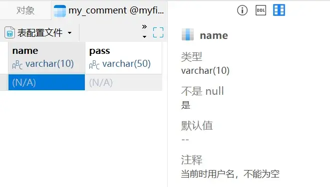
查看 comment：必须通过查看表创建语句。
1 | |
1 | |
4.2 列属性——主键
顾名思义：主要的键，primary key，在一张表中，有且只有一个字段，里面的值具有唯一性
创建主键
1 | |
1 | |
1 | |
1 | |
表后增加
1 | |
1 | |
1 | |
删除主键
1 | |
1 | |
复合主键
案例：有一张学生选修课表:一个学生可以选修多个选修课，一个选修课也可以由多个学生来选：但是一个学生在一个选修课中只有一个成绩。
1 | |
1 | |
主键一旦增加，那么对对应的字段有数据要求：
- 当前字段对应的数据不能为空；
- 当前字段对应的数据不能有任何重复
主键分类
主键分类采用的是主键所对应的字段的业务意义分类
业务主键：主键所在的字段，具有业务意义（学生 ID，课程 ID）
逻辑主键：自然增长的整型（应用广泛）
5.1 列属性——自增长（基本使用）
自动增长：auto_increment，当给定某个字段该属性之后，该列的数据在没有提供确定数据的时候，系统会根据之前已经存在的数据进行自动增加后，填充数据。
通常自动增长用于逻辑主键。
原理
自动增长的原理：
- 在系统中有维护一组数据，用来保存当前使用了自动增长属性的字段，记住当前对应的数据值，再给定一个指定的步长
- 当用户进行数据插入的时候，如果没有给定值，系统在原始值上再加上步长变成新的数据
- 自动增长的触发：给定属性的字段没有提供值
- 自动增长只适用于数值
1 | |
1 | |
1 | |
修改自动增长
查看自增长：自增长一旦触发使用之后，会自动的在表选项中增加一个选项（一张表最多只能拥有一个自增长）
1 | |
1 | |
5.2 列属性——自增长（高级使用）
删除自动增长
删除自增长：就是在字段属性之后不再保留 auto increment，当用户修改自增长所在字段时，如果没有看到 auto_increment 属性，系统会自动清除该自增长。
1 | |
初始设置
在系统中，有一组变量用来维护自增长的初始值（auto_increment_increment）和步长（auto_increment_offset）。
1 | |
1 | |
细节问题
- 一张表只有一个自增长：自增长会上升到表选项中
- 如果数据插入中没有触发自增长（给定了数据），那么自增长不会表现
5.3 列属性——唯一键
唯一键
唯一键：unique key，用来保证对应的字段中的数据唯一的。
主键也可以用来保证字段数据唯一性，但是一张表只有一个主键。
- 唯一键在一张表中可以有多个。
- 唯一键允许字段数据为 NULL，NULL 可以有多个（NULL 不参与比较）
1 | |
1 | |
1 | |
唯一键效果：在不为空的情况下，不允许重复。
删除唯一键
删除的基本语法：alter table 表名 drop index 唯一键名字;
复合唯一键
唯一键与主键一样可以使用多个字段来共同保证唯一性；
一般主键都是单一字段（逻辑主键），而其他需要唯一性的内容都是由唯一键来处理。
6.1 表关系——一对一
表关系：表与表之间（实体）有什么样的关系，每种关系应该如何设计表结构。
一对一：一张表中的一条记录与另外一张表中最多有一条明确的关系：通常，此设计方案保证两张表中使用同样的主键即可
学生表
| 学生 ID（PRI） | 姓名 | 年龄 | 性别 | 籍贯 | 婚否 | 住址 |
|---|---|---|---|---|---|---|
表的使用过程中：常用的信息会经常去查询，而不常用的信息偶尔才会用到。
解决方案：将两张表拆分，常见的放一张表，不常见的放一张表
常用表
| 学生 ID（PRI） | 姓名 | 年龄 | 性别 |
|---|---|---|---|
不常用表
| 学生 ID（PRI） | 籍贯 | 婚否 | 住址 |
|---|---|---|---|
6.2 表关系——一对多（多对一）
一对多，通常也叫作多对一的关系。通常一对多的关系设计的方案，在“多”关系的表中去维护一个字段，这个字段是“一”关系的主键。
母亲表
| 母亲 ID | 姓名 | 年龄 | 身高 |
|---|---|---|---|
| M1 | |||
| M2 |
孩子表
| 孩子 ID | 姓名 | 年龄 | 身高 | 母亲 ID |
|---|---|---|---|---|
6.3 表关系——多对多
多对多：一张表中的一条记录在另外一张表中可以匹配到多条记录，反过来也一样。
多对多的关系如果按照多对一的关系维护：就会出现一个字段中有多个其他表的主键，在访问的时候就会带来不便。
既然通过两张表自己增加字段解决不聊问题，那么就通过第三张表来解决。
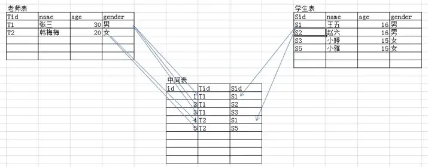
多对多解决方案：增加一个中间表，让中间表与对应的其他表形成两个多对一的关系：多对一的解决方案是在“多”表中增加“一”表对应的主键字段。
day03
1.1 高级操作——新增数据
多数据插入
1 | |
一次添加多行数据：
1 | |
1 | |
主键冲突
主键冲突：在有的表中，使用的是业务主键（字段有业务含义），但是往往在进行数据插入的时候，又不确定数据表中是否已经存在对应的主键。
1 | |
1 | |
主键冲突更新：
类似插入数据语法，如果插入的过程中主键冲突，那么采用更新方法。
1 | |
1 | |
1 | |
1 | |
蠕虫复制
1 | |
1 | |
蠕虫复制：一分为二，成倍的增加。从已有的数据中获取数据，并且将获取到的数据插入到数据表中。
1 | |
1 | |
1 | |
1 | |
1 | |
1 | |
1 | |
1 | |
注意：
- 蠕虫复制的确通常是重复数据，没有太大业务意义：可以在短期内快速增加表的数据量从而可以测试表的压力，还可以通过大量数据来测试表的效率（索引）
- 蠕虫复制虽好，但是要注意主键冲突。
1.2 高级操作——更新数据
在更新数据的时候，特别要注意：通常一定是跟随条件更新：
1 | |
如果没有条件，是全表更新数据。但是可以使用 limit 来显示更新的数量：
1 | |
1 | |
1.3 高级操作——删除数据
- 删除数据的时候尽量不要全部删除，应该使用
where进行判定； - 删除数据的时候可以使用
limit来限制要删除的具体数量； delete删除数据的时候无法重置auto_increment
2.1 高级操作——查询数据（where 前）
单表数据
完整的查询指令：
1 | |
Select 选项：系统该如何对待查询得到的结果
All：默认的，表示保存所有的记录。
多表数据
字段列表：有的时候需要从多张表获取数据，在获取数据的时候，可能存在不同表中有同名的字段，需要将同名的字段命名成不同名的:别名 alias。
1 | |
1 | |
结果：两张表的记录数相乘，字段数拼接。
本质：从第一张表取出一条记录，去拼凑第二张表的所有记录，保留所有结果。得到的结果在数学上有一个专业的说法：笛卡尔积，这个结果出了给数据库造成压力，没有其他意义：应该尽量避免出现笛卡尔积。
动态数据
From 后面跟的数据不是一个实体表,而是一个从表中查询出来得到的二维结果表（子查询）。
基本语法：from (select 字段列表 from 表) as 别名;
1 | |
1 | |
2.2 高级操作——查询数据（group by 聚合函数）
Group by 表示分组的含义：根据指定的字段，将数据进行分组:分组的目标是为了统计
分组统计
1 | |
1 | |
Group by 是为了分组后进行数据统计的，如果只是想看数据显示，那么 group by 没什么含义：group by 将数据按照指定的字段分组之后，只会保留每组的第一条记录。
利用一些统计函数：（聚合函数）
| 函数 | 说明 |
|---|---|
| count() | 统计每组中的数量，如果统计目标是字段，那么不统计为空 NULL 字段 |
| avg() | 求平均值 |
| sum() | 求和 |
| max() | 求最大值 |
| min() | 求最小值 |
1 | |
1 | |
1 | |
多分组
将数据按照某个字段进行分组之后，对已经分组的数据进行再次分组
基本语法：group by 字段1,字段2;
先按照字段 1 进行排序，之后将结果再按照字段 2 进行排序，以此类推。
分组排序
MySQL 中，分组默认有排序的功能:按照分组字段进行排序，默认是升序
基本语法：groupby字段 [ascldesc]，字段 [ascldesc];
回溯统计
当分组进行多分组之后，往上统计的过程中，需要进行层层上报，将这种层层上报统计的过程称之为回溯统计；每一次分组向上统计的过程都会产生一次新的统计数据，而且当前数据对应的分组字段为 NULL。
基本语法：group by 字段 [asc|desc] with rollup;
1 | |
1 | |
1 | |
1 | |
1 | |
1 | |
3.2 高级操作——查询数据（having+orderby+limit）
Having
1 | |
1 | |
Having 在 group by 分组之后，可以使用聚合函数或者字段别名（where 是从表中取出数据别名是在数据进入到内存之后才有的）
强调：having 是在 group by 之后，group by 是在 where 之后：where 的时候表示将数据从磁盘拿到内存，where 之后的所有操作都是内存操作。
Order by
Order by 排序：根据校对规则对数据进行排序
1 | |
1 | |
Limit
limit 分页，偏移量;
如果分页数不够，系统不会强求。
1 | |
1 | |
Limit 通常在查询的时候如果限定为一条记录的时候，使用的比较多:有时候获取多条记录并不能解决业务问题，但是会增加服务器的压力。
1 | |
1 | |
4.1 高级操作——运算符
算术运算符
+、-、*、/、%
1 | |
1 | |
1 | |
比较运算符
> 、>=、<、<=、= 、<>
=：在 MySQL 中，没有对应的==比较符号，就是使用=来进行相等判断<=>：相等比较。
1 | |
1 | |
1 | |
1 | |
1 | |
1 | |
1 | |
1 | |
Is 运算符
ls 是专门用来判断字段是否为 NULL 的运算符
基本语法：is null/is not null
1 | |
1 | |
Like 运算符
Like 运算符：是用来进行模糊匹配
基本语法：like '匹配模式;
匹配模式中，有两种占位符：
-
_：匹配对应的单个字符 -
%：匹配多个字符
1 | |
1 | |
4.2 联合查询
基本概念
联合查询是可合并多个相似的选择查询的结果集。等同于将一个表追加到另一个表，从而实现将两个表的查询组合到一起，使用谓词为 UNION 或 UNION ALL。
联合查询：将多个查询的结果合并到一起（纵向合并）：字段数不变，多个查询的记录数合并。
应用查询
- 将同一张表中不同的结果（需要对应多条查询语句来实现），合并到一起展示数据
- 最常见：在数据量大的情况下，会对表进行分表操作，需要对每张表进行部分数据统计使用联合查询来讲数据存放到一起显示。
1 | |
1 | |
order by 在联合查询中若要生效，必须配合使用 limit；而 limit 后面必须跟对应的限制数量（通常可以使用一个较大的值，大于对应表的记录数）
5.1 连接查询——概念（分类）
连接查询：将多张表连到一起进行查询（会导致记录数行和字段数列发生改变）
连接查询的意义
在关系型数据库设计过程中，实体（表）与实体之间是存在很多联系的。在关系型数据库表的设计过程中，遵循着关系来设计：一对一，一对多和多对多，通常在实际操作的过程中，需要利用这层关系来保证数据的完整性。
连接查询分类
连接查询一共有以下几类:
交叉连接
内连接
外连接：左外连接（左连接）和右外连接（右连接）。
自然连接
5.2 连接查询——交叉连接
交叉连接：将两张表的数据与另外一张表彼此交叉
- 从第一张表依次取出每一条记录
- 取出每一条记录之后，与另外一张表的全部记录挨个匹配
- 没有任何匹配条件，所有的结果都会进行保留
- 记录数 = 第一张表记录数 * 第二张表记录数；字段数 = 第一张表字段数 + 第二张表字段数（笛卡尔积）
1 | |
交叉连接产生的结果是笛卡尔积，没有实际应用。
5.3 连接查询——内连接
内连接：inner join，从一张表中职出所有的记录去另外一张表中匹配:利用匹配条件进行匹配，成功了则保留，失败了放弃。
- 从第一张表中职出一条记录，然后去另外一张表中进行匹配
- 利用匹配条件进行匹配；
- 匹配成功：保留，继续向下匹配
- 匹配失败：向下继续，如果全表匹配失败，结束
- 因为表的设计通常容易产生同名字段，尤其是 ID，所以为了避免重名出现错误，通常使用
表名.字段名，来确保唯一性 - 通常，如果条件中使用到对应的表名，而表名通常比较长，所以可以通过表别名来简化
- 内连接匹配的时候，必须保证匹配到才会保存
- 内连接因为不强制必须使用匹配条件（on）因此可以在数据匹配完成之后，使用 where 条件来限制，效果与 on 一样（建议使用 on）
1 | |
内连接通常是在对数据有精确要求的地方使用：必须保证两种表中都能进行数据匹配。
6.1 连接查询——外连接
外链接：outer join，按照某一张表作为主表（表中所有记录在最后都会保留），根据条件去连接另外一张表，以而得到目标数据。
外连接分为两种：左外连接（left join），右外连接（right join）
-
左连接：左表是主表
-
右连接：右表是主表
原理
- 确定连接主表：左连接就是 left join 左边的表为主表；right join 就是右边为主表
- 拿主表的每一条记录，去匹配另外一张表（从表）的每一条记录
- 如果满足匹配条件：保留，不满足即不保留。
- 如果主表记录在从表中一条都没有匹配成功，那么也要保留该记录：从表对应的字段值都未 NULL
语法
基本语法：
左连接：主表 left join 从表 on 连接条件;
右连接：从表 right join 主表 on 连接条件;
左连接对应的主表数据在左边，右连接对应的主表数据在右边；
1 | |
特点
- 外连接中主表数据记录一定会保存：连接之后不会出现记录数少于主表（内连接可能）
- 左连接和有连接其实可以互相转换，但是数据对应的位置（表顺序）会改变
应用
非常常用的一种获取的数据方式：作为数据获取对应主表以及其他数据（关联）
6.2 连接查询——using 关键字
是在连接查询中用来代替对应的 on 关键字的，进行条件匹配。
原理
- 在连接查询时，使用 on 的地方用 using 代替
- 使用 using 的前提是对应的两张表连接的字段是同名（类似自然连接自动匹配）
- 如果使用 using 关键字，那么对应的同名字段，最终在结果中只会保留一个。
1 | |
day4
1.1 子查询——概念和分类
子查询概念
子查询：sub query
子查询是一种常用计算机语言 SELECT-SQL 语言中嵌套查询下层的程序模块。当一个查询是另一个查询的条件时，称之为子查询。
子查询:指在一条 select 语句中，嵌入了另外一条 select 语句，那么被嵌入的 select 语句称之为子查询语句。
主查询概念
主查询：主要的查询对象，第一条 select 语句，确定的用户所有获取的数据目标（数据源）已经要具体得到的字段信息。
子查询和主查询的关系
- 子查询是嵌入到主查询中的
- 子查询的辅助主查询的：要么作为条件，要么作为数据源
- 子查询其实可以独立存在：是一条完整的 select 语句。
子查询分类
按功能分：
- 标量子查询：子查询返回的结果是一个数据（一行一列）
- 列子查询：返回的结果是一列（一列多行）
- 行子查询：返回的结果是一行（一行多列）
- 表子查询：返回的结果是多行多列（多行多列）
- Exists 子查询：返回的结果 1 或者 0（类似布尔操作）
按位置分：
- Where 子查询：子查询出现的位置在 where 条件中
- From 子查询：子查询出现的位置在 from 数据源中（做数据源）
1.2 子查询——标量子查询
概念
标量子查询：子查询得到结果是一个数据（一行一列）
语法
基本语法：select * from 数据源 where 条件判断 =/<>(select 字段名 from 数据源 where 条件判断);
（子查询得到的结果只有一个值）
示例
在 my_student 表结构如下：
1 | |
my_class 表结构如下的情况下：
1 | |
通过班级 ID 获取班级名字（标量子查询实现）：
1 | |
1 | |
1.3 子查询——列子查询
概念
列子查询：子查询得到的结果是一列数据（一列多行）
语法
1 | |
示例
想获取已经有学生在班的所有班级名字
- 找出学生表中所有的班级 ID
- 找出班级表中对应的名字
列子查询实现
1 | |
1 | |
2.1 子查询——行子查询
需求：获取班级上年龄最大，且身高最高的学生
- 求出班级年龄最大的值；
- 求出班级身高最高值；
- 求出对应的学生
1 | |
1 | |
2.2 子查询——表子查询
概念
表子查询：子查询返回的结果是多行多列,表子查询与行子查询非常相似，只是行子查询需要产生行元素，而表子查询没有。
行子查询是用于 where 条件判断：where 子查询
表子查询是用于 from 数据源：from 子查询
语法
1 | |
示例
- 获取每个班上最高身高的学生（一个）
- 将每个班最高的学生排在最前面：
order by - 再针对结果进行
group by：保留每组第一个
1 | |
1 | |
1 | |
2.3 子查询——exists 子查询
概念
Exists 子查询：查询返回的结果只有 0 或者 1，1 代表成立，0 代表不成立
1 | |
1 | |
3.1 子查询——特定关键字
In
1 | |
1 | |
Any
任意一个
any(列子查询)：条件在查询结果中有任意一个匹配即可，可等价于in<>and(列子查询)：条件在查询结果中不等于任意一个
1 | |
Some
与 any 完全一样：在国外，some 与 any 的正面含义一致，但是否定就大不相同：not any 与 not some
开发者为了让对应的使用者不要在语法上纠结：重新设计了 some
All
=all(列子查询)：等于里面所有<>al(列子查询)：不等于其中所有
3.2 数据备份与还原——整库备份与还原
整库数据备份也叫 SQL 数据备份：备份的结果都是 SQL 指令
在 MySQL 中提供了一个专门用于备份 SQL 的客户端：MySQLdump.exe
应用场景
SQL 备份是一种 MySQL 中非常常见的备份与还原方式，SQL 备份不只是备份数据，还备份对应的 SQL 指令（表结构）：即便是数据库遭到毁灭性的破坏（数据库被删），那么利用 SQL 备份依然可以实现数据还原。
SQL 备份因为需要备份结构，因此产生的备份文件特别大，因此不适合特大型数据备份，也不适合数据变换频繁型数据库备份
应用方案
SQL 备份用到的是专门的备份客户端，因此还没与数据库服务器进行连接。
备份可以有三种形式：
-
整库备份（只需要提供数据库名字）
1
MySQLdump.exe -hlocalhost -P3306 -uroot -p mydatabase2 > d:/mydatabase2.sql获得
MySQLdump.exe -hlocalhost -P3306 -uroot -p mydatabase2 > d:/mydatabase2.sql：1
2
3
4
5
6
7
8
9
10
11
12
13
14
15
16
17
18
19
20
21
22
23
24
25
26
27
28
29
30
31
32
33
34
35
36
37
38
39
40
41
42
43
44
45
46
47
48-- MySQL dump 10.13 Distrib 8.0.41, for Win64 (x86_64)
--
-- Host: localhost Database: mydatabase2
-- ------------------------------------------------------
-- Server version 8.0.41
/*!40101 SET @OLD_CHARACTER_SET_CLIENT=@@CHARACTER_SET_CLIENT */;
/*!40101 SET @OLD_CHARACTER_SET_RESULTS=@@CHARACTER_SET_RESULTS */;
/*!40101 SET @OLD_COLLATION_CONNECTION=@@COLLATION_CONNECTION */;
/*!50503 SET NAMES utf8mb4 */;
/*!40103 SET @OLD_TIME_ZONE=@@TIME_ZONE */;
/*!40103 SET TIME_ZONE='+00:00' */;
/*!40014 SET @OLD_UNIQUE_CHECKS=@@UNIQUE_CHECKS, UNIQUE_CHECKS=0 */;
/*!40014 SET @OLD_FOREIGN_KEY_CHECKS=@@FOREIGN_KEY_CHECKS, FOREIGN_KEY_CHECKS=0 */;
/*!40101 SET @OLD_SQL_MODE=@@SQL_MODE, SQL_MODE='NO_AUTO_VALUE_ON_ZERO' */;
/*!40111 SET @OLD_SQL_NOTES=@@SQL_NOTES, SQL_NOTES=0 */;
--
-- Table structure for table `teacher`
--
DROP TABLE IF EXISTS `teacher`;
/*!40101 SET @saved_cs_client = @@character_set_client */;
/*!50503 SET character_set_client = utf8mb4 */;
CREATE TABLE `teacher` (
`name` varchar(10) DEFAULT NULL
) ENGINE=InnoDB DEFAULT CHARSET=gbk;
/*!40101 SET character_set_client = @saved_cs_client */;
--
-- Dumping data for table `teacher`
--
LOCK TABLES `teacher` WRITE;
/*!40000 ALTER TABLE `teacher` DISABLE KEYS */;
/*!40000 ALTER TABLE `teacher` ENABLE KEYS */;
UNLOCK TABLES;
/*!40103 SET TIME_ZONE=@OLD_TIME_ZONE */;
/*!40101 SET SQL_MODE=@OLD_SQL_MODE */;
/*!40014 SET FOREIGN_KEY_CHECKS=@OLD_FOREIGN_KEY_CHECKS */;
/*!40014 SET UNIQUE_CHECKS=@OLD_UNIQUE_CHECKS */;
/*!40101 SET CHARACTER_SET_CLIENT=@OLD_CHARACTER_SET_CLIENT */;
/*!40101 SET CHARACTER_SET_RESULTS=@OLD_CHARACTER_SET_RESULTS */;
/*!40101 SET COLLATION_CONNECTION=@OLD_COLLATION_CONNECTION */;
/*!40111 SET SQL_NOTES=@OLD_SQL_NOTES */;
-- Dump completed on 2025-02-01 10:46:20 -
单表备份：数据库后面跟一张表
-
度表备份：数据库后跟多张表
1
MySQLdump.exe -hlocalhost -P3306 -uroot -p myfirstdb my_student my_int > d:/student_int.sql
数据还原
MySQL 提供了多种方式来实现：
MySQLdump 备份的数据中没有关于数据库本身的操作，都是针对表级别的操作：当进行数据（SQL 还原），必须指定数据库
-
利用 MySQL.exe 客户端：没有登录之前，可以直接用该客户端进行数据还原
MySQL.exe-hPup 数据库 < 文件位置 -
在 SQL 指令，提供了一种导入 SQL 指令的方式。必须先进入到对应的数据库。
Source "SQL 文件位置";1
MySQL -uroot -p myfirstdb < d:/student_int.sql -
人为操作：打开备份文件，复制所有 SQL 指令,然后到 MySQL.exe 客户端中去粘贴执行。（不推荐）。
3.3 用户权限管理——用户管理
创建用户
在 MySQL 中，对用的用户管理中，是由对应的 Host 和 User 共同组成主键来区分用户。
User：代表用户的用户名
Host：代表本质是允许访问的客户端（IP 或者主机地址）。如果 host 使用*代表所有的用户（客户端）都可以访问
理论上讲可以采用两种方式创建用户：
- 直接使用 root 用户在 MySQL.user 表中插入记录（不推荐）
- 专门创建用户的 SQL 指令。基本语法：
create user 用户名 identified by '明文密码';
1 | |
1 | |
删除用户
注意：MySQL 中 user 是带着 host 本身的（具有唯一性）
基本语法：drop user 用户名 @host;
1 | |
修改用户密码
MySQL 中提供了多种修改的方式：基本上都必须使用对应提供的一个系统函数: password()，需要靠该函数对密码进行加密处理。
-
使用专门的修改密码的指令
1
set password for 用户 = password('新的明文密码');1
set password for 'user1'@'%' = password('654321'); -
使用更新语句 update 来修改表
1
update MySQL.user set password = password('新的明文密码') where user = '' and host='';
4.1 用户权限管理——权限管理
权限管理
再 MySQL 中将权限管理分为三类：
- 数据权限：增删改查（select/update/delete/insert）
- 结构权限：结构操作（create/drop）
- 管理权限：权限管理（create user/grant/revoke）
授予权限：grant
将权限分配给指定的用户。
基本语法：grant 权限列表 on 数据库/\*.表名/\*to 用户;
权限列表：使用逗号分隔，但是可以使用 all privileges 代表全部权限。数据库.表名：可以是单表（数据库名字.表名），可以是具体某个数据库（数据库.），也可以整库（*.*）
取消权限：revoke
权限回收：将权限从用户手中收回
基本语法：revoke 权限列表/all privileges on 数据库/*.表/* from 用户;
刷新权限：flush
Flush：刷新，将当前对用户的权限操作，进行一个刷新，将操作的具体内容同步到对应的 表中。
基本语法：flush privileges;
4.2 用户权限管理——密码丢失找回
如果忘记了 root 用户密码，就需要去找回或者重置 root 用户密码
-
停止服务
1
net stop MySQL -
重新启动服务（启动服务器但是跳过权限）
1
MySQLd.exe --skip-grant-tables -
当前启动的服务器没有权限概念：非常危险，任何客户端，不需要任何用户信息都可以直接登录，而且是 root 权限：新开客户端，使用 MySQL.exe 登录即可
1
MySQL -
修改 root 用户密码：
1
update MySQL.user set password = password('root') where user='root' and host='localhost'; -
关闭服务器（结束
MySQLd.exe这个进程），重启服务
4.3 外键——概念（基本操作）
增加外键
MySQL 中提供了两种方式增加外键
-
方案 1：在创建表的时候增加外键（类似主键）。
基本语法：在字段之后增加一条语句
1
[constraint `外键名`]foreign key(外键字段) references 主表(主键);1
2
3
4
5
6
7
8create table my_foreign(
id int primary key auto_increment,
name varchar(10) not null,
class_id int, -- 关联班级 my_class
foreign key(class_id) references my_class(class_id) -- 增加外键
)charset utf8;
desc my_foreign;1
2
3
4
5
6
7
8+----------+-------------+------+-----+---------+----------------+
| Field | Type | Null | Key | Default | Extra |
+----------+-------------+------+-----+---------+----------------+
| id | int | NO | PRI | NULL | auto_increment |
| name | varchar(10) | NO | | NULL | |
| class_id | int | YES | MUL | NULL | |
+----------+-------------+------+-----+---------+----------------+
3 rows in set (0.01 sec)1
2-- 修改 my_student 表，将 class_id 设为外键字段
alter table my_student add constraint `student_class_ibfk_1` foreign key(class_id) references my_class(class_id); -
方案 2：在创建表后增加外键。
1
Alter table 从表 add [constraint`外键名`]foreign key(外键字段) references 主表(主键);
修改 & 删除外键
外键不允许修改，只能先删除后增加
基本语法：
1 | |
外键基本要求
- 外键字段需要保证与关联的主表的主键字段类型完全一致；
- 基本属性也要相同，
- 如果是在表后增加外键，对数据还有一定的要求（从表数据与主表的关联关系）
- 外键只能使用 innodb 存储引擎：myisam 不支持
5.1 外键——约束
外键约束
外键约束：通过建立外键关系之后，对主表和从表都会有一定的数据约束效率。
约束的基本概念
- 当一个外键产生时：外键所在的表（从表）会受制于主表数据的存在从而导致数据不能进行某些不符合规范的操作（不能插入主表不存在的数据）
- 如果一张表被其他表外键引入，那么该表的数据操作就不能随意：必须保证从表数据的有效性（不能随便删除一个被从表引入的记录）
外键约束的概念
可以在创建外键的时候，对外键约束进行选择性的操作。
基本语法:
1 | |
约束模式有三种：
district：严格模式，默认的，不允许操作。cascade：级联模式，一起操作，主表变化，从表数据跟着变化set null：置空模式，主表变化（删除），从表对应记录设置为空：前提是从表中对应的外键字段允许为空
外键约束主要约束的对象是主表操作：从表就是不能插入主表不存在的数据。
通常在进行约束时候的时候，需要指定操作：update 和 delete
常用的约束模式：on update cascade, on delete set null，更新级联，删除置空
约束作用
保证数据的完整性：主表与从表的数据要一致。
正是因为外键有非常强大的数据约束作用，而且可能导致数据在后台变化的不可控。导致程序在进行设计开发逻辑的时候，没有办法去很好的把握数据（业务），所以外键比较少使用。
5.2 视图——基本操作
1 | |
使用视图
1 | |
1 | |
修改视图
修改视图：本质是修改视图对应的查询语句
基本语法：
1 | |
删除视图
基本语法：
1 | |
5.3 事务安全——概念
事务概念
事务（Transaction）是访问并可能更新数据库中各种数据项的一个程序执行单元（unit）。事务通常由高级数据库操纵语言或编程语言书写的用户程序的执行所引起。事务由事务开始（begin transaction）和事务结束（end transaction）之间执行的全体操作组成。
事务基本原理
基本原理：MySQL 允许将事务统一进行管理（存储引擎INNODB），将用户所做的操作，暂时保存起来，不直接放到数据表（更新），等到用于确认结果之后再进行操作。
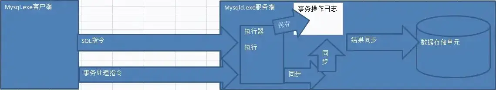
事务在 MySQL 中通常是自动提交的，但是也可以使用手动事务。
自动事务
自动事务：autocommit，当客户端发送一条 SQL 指令（写操作：增删改）给服务器的时候服务器在执行之后，不用等待用户反馈结果，会自动将结果同步到数据表。
证明：利用两个客户端，一个客户端执行 SQL 指令，另外一个客户端查看执行结果。
关闭自动事务：关闭之后系统就不再帮助用户提交结果了。
1 | |
一旦自动事务关闭，那么需要用户提供同步的命令
Commit：提交（同步到数据表：事务也会被清空）
Rollback：回滚（清空之前的操作，不要了）
事务没有提交的对比查看：在执行事务端的客户端中，系统在进行数据查看的时候会利用事务日志中保存的结果对数据进行加工。
通常，我们不会关闭自动事务：这样操作太麻烦。因此只会在需要使用事务处理的时候，才会进行操作（手动事务）
6.2 事务安全——手动事务
手动事务：不管是开始还是过程还是结束都需要用户（程序员），手动的发送事务操作指令来实现。
手动事务对应的命令：
start transacion;开启事务：从这条语句开始，后面的所有语句都不会直接写入到数据表（保存在事务日志中）- 事务处理：多个写指令构成。
- 事务提交：commit/rollback，到这个时候所有的事务才算结束。
开启事务
1 | |
执行事务
将多个连续的但是是一个整体的 SQL 指令，逐一执行
提交事务
确认提交：commit，数据写到数据表（清空）
回滚操作：rollback，所有数据无效并清空
回滚点
回滚点：savepoint，当有一系列事务操作时，而其中的步骤如果成功了，没有必要重新来过可以在某个点（成功），设置一个记号（回滚点），然后如果后面有失败，那么可以回到这个记号位置。
增加回滚点：savepoint 回滚点名字; 字母数字和下划线构成。
回到回滚点：rollbackt o 回滚点名字; 那个记号（回滚点）之后的所有操作没有了
注意：在一个事务处理中，如果有很多个步骤，那么可以设置多个回滚点。但是如果回到了前面的回滚点，后面的回滚点就失效；
6.3 事务安全——特性
事务应该具有 4 个属性：原子性、一致性、隔离性、持久性。这四个属性通常称为 ACID 特性。
-
原子性（atomicity）。一个事务是一个不可分割的工作单位,事务中包括的诸操作要么都做,要么都不做。 事务从 start transaction 起到提交事务（comit 或者 rollback），要么所有的操作都成功，要么就是所有的操作都失败;
-
一致性（consistency）。事务必须是使数据库从一个一致性状态变到另一个一致性状态。一致性与原子性是密切相关的。
数据表中的数据修改，要么是所有操作一次性修改，要么是根本不动
-
隔离性（isolation）。一个事务的执行不能被其他事务干扰。即一个事务内部的操作及使用的数据对并发的其他事务是隔离的，并发执行的各个事务之间不能互相干扰。如果一个客户端在使用事务操作一个数据（可能是一行/整表）的时候，另外一个客户端不能对该数据进行操作。
什么时候是行被隔离？什么时候是正表被隔离？
说明：如果条件中使用了索引（主键），那么系统是根据主键直接找到某条记录，这个时候与其他记录无关，那么只隔离一条记录；反之，如果说系统是通过全表检索（每一条记录都去检查：没有索引），被检索的所有数据都会被锁定（整表）
-
持久性（durability）。持久性也称永久性（permanence），指一个事务一旦提交，它对数据库中数据的改变就应该是永久性的。接下来的其他操作或故障不应该对其有任何影响。
day5
1.1 变量——系统变量
MySQL 本质是一种编程语言，需要很多变量来保存数据。MySQL 中很多的属性控制都是通过 MySQL 中固有的变量来实现的。
系统变量
系统内部定义的变量，系统变量针对所有用户（MySQL 客户端）有效。
查看系统所有变量：
1 | |
1 | |
MySQL 允许用户使用 select 查询变量的数据值（系统变量）
基本语法：
1 | |
1 | |
1 | |
修改系统变量：分为两种修改方式
-
局部修改（会话级别）：只针对当前自己客户端当次连接有效
基本语法：
1
set 变量名=新值; -
全局修改：针对所有的客户端，“所有时刻”都有效
基本语法：
1
2set global 变量名 = 值;
set @@global.变量名 = 值;
全局修改之后：所有连接的客户端并没发现改变？全局修改只针对新客户端生效（正在连着的无效）
注意：如果想要本次连接对应的变量修改有效，那么不能使用全局修改，只能使用会话级别修改
1.2 变量——会话变量 & 局部变量
会话变量
会话变量也称之为用户变量，会话变量跟 MySQL 客户端是绑定的，设置的变量，只对当前用户使用的客户端生效。
定义用户变量：
1 | |
在 MySQL 中因为没有比较符号 ==，所以是用 = 代替比较符号，有时候在赋值的时候，会报错。
MySQL 为了避免系统分不清是赋值还是比较，特定增加一个变量的赋值符号 :=。
MySQL 是专门存储数据的：允许将数据从表中取出存储到变量中，查询得到的数据必须只能是行数据（一个变量对应一个字段值）。MySQL 没有数组。
-
赋值且査看赋值过程：
1
select @变量1 = 字段 1,@变量 2 = 字段 2 from 数据表 where 条件; -
只赋值，不看过程：
1
select 字段 1, 字段 2.. from 数据源 where 条件 into @变量 1, @变量 2..
局部变量
作用范围在 begin 到 end 语句块之间。在该语句块里设置的变量，declare 语句专门用于定义局部变量。
- 局部变量是使用 declare 关键字声明
- 局部变量
declare语句出现的位置一定是在begin和end之间（begin end是在大型语句块中使用：函数/存储过程/触发器） - 声明语法：
declare 变量名 数据类型 [属性];
2.1 流程结构——if 分支
基本语法
If 在 MySQL 中有两种基本用法、
用在 select 查询当中，当做一种条件来进行判断。基本语法：
1 | |
1 | |
1 | |
用在复杂的语句块中（函数/存储过程/触发器）。
1 | |
复合语法
复合语法：代码的判断存在两面性，两面都有对应的代码执行。
基本语法：
1 | |
2.2 流程控制——while 循环
基本语法
循环体都是需要在大型代码块中使用
基本语法：
1 | |
结构标识符
结构标识符：为某些特定的结构进行命名，然后为的是在某些地方使用名字。
基本语法
1 | |
标识符的存在主要是为了循环体中使用循环控制。在 MySQL 中没有 continue 和 break，有自己的关键字替代。
lterate：迭代，就是以下的代码不执行，重新开始循环（continue）
leave：离开，整个循环终止（break）
2.3 函数——内置函数
函数
在 MySQL 中，函数分为两类：系统函数（内置函数）和自定义函数
内置函数
字符串函数：
| 名称 | 功能 |
|---|---|
Char_length() |
判断字符串的字符数。 |
Length() |
判断字符串的字节数（与字符集） |
Concat() |
连接字符串 |
Instr() |
判断字符在目标字符串中是否存在，存在返回其位置，不存在返回 0 |
Lcase() |
全部小写 |
Left() |
从左侧指定位置开始截取字符串 |
Ltrim() |
消除左边对应的空格 |
Mid() |
从中间指定位置开始截取，如果不指定截取长度，直接到最后 |
1 | |
1 | |
时间函数
| 名称 | 功能 |
|---|---|
Now() |
返回当前时间，日期 时间 |
Curdate() |
返回当前日期 |
Curtime() |
返回当前时间 |
Datediff() |
判断两个日期之间的天数差距，参数日期必须使用字符串格式（用引号） |
Date_add(日期, interval 时间数字 type) |
进行时间的增加 Type:day/hour/minute/second |
1 | |
1 | |
其他函数
| 名称 | 功能 |
|---|---|
MD5() |
对数据进行 md5 加密（MySQL 中的 md5 与其他任何地方的 md5 加密出来的内容是完全相同的） |
Version() |
获取版本号 |
Database() |
显示当前所在数据库 |
UUID() |
生成一个唯一标识符（自增长）：自增长是单表唯一，UUID 是整库（数据唯一同时空间唯一） |
1 | |
1 | |
数学函数
| 名称 | 功能 |
|---|---|
Abs() |
绝对值 |
Ceiling() |
向上取整 |
Floor() |
向下取整 |
Pow() |
求指数，谁的多少次方 |
Rand() |
获取一个随机数（0-1 之间） |
Round() |
四舍五入函数 |
3.1 函数——自定义函数
自定义函数：用户自己定义的函数。
函数：实现某种功能的语句块（由多条语句组成）
- 函数内部的每条指令都是一个独立的个体：需要符合语句定义规范：需要语句结束符分号；
- 函数是一个整体，而且函数是在调用的时候才会被执行，那么当设计函数的时候，意味着整体不能被中断；
- MySQL 一旦见到语句结束符分号，就会自动开始执行
解决方案：在定义函数之前，尝试修改临时的语句结束符
基本语法：delimiter
修改临时语句结束符：delimiter 新符号 [可以使用系统非内置即可$$]
中间为正常 SQL 指令：使用分号结束（系统不会执行：不认识分号）
使用新符号结束。
修改回语句结束符：delimiter;
创建函数
自定义函数包含几个要素：function 关键字，函数名，参数(形参和实参[可选])，确认函数返回值类型，函数体，返回值。
1 | |
1 | |
1 | |
查看函数的创建语句：show create function 函数名字;
1 | |
1 | |
调用函数
自定义函数的调用与内置函数的调用是一样的：select 函数名(实参列表);
1 | |
1 | |
注意事项
- 自定义函数是属于用户级别的：只有当前客户端对应的数据库中可以使用。
- 可以在不同的数据库下看到对应的函数，但是不可以调用
- 自定义函数：通常是为了将多行代码集合到一起解决一个重复性的问题
- 函数因为必须规范返回值：那么在函数内部不能使用 select 指令：select 一旦执行就会得到一个结果（result set）：
select 字段 into @变量;（唯一可用）
3.2 函数和流程结构综合案例
需求：从 1 开始，直到用户传入的对应的值为止，自动求和：凡是 5 的倍数都不要
设计：
- 创建函数
- 需要一个形参：确定要累加到什么位置
- 需要定义一个变量来保存对应的结果
- 内部需要一个循环来实现迭代累加。
- 循环内部需要进行条件判断控制：5 的倍数
1 | |
调用函数：
1 | |
1 | |
4.1 变量作用域
变量作用域：变量能够使用的区域范围。
局部作用域
使用 declare 关键字声明（在结构体内：函数/存储过程/触发器），而且只能在结构体内部使用
declare 关键字声明的变量没有任何符号修饰，就是普通字符串，如果在外部访问该变量，系统会自动认为是字段
会话作用域
用户定义的，使用@符号定义的变量，使用 set 关键字
会话作用域：在当前用户当次连接有效，只要在本连接之中，任何地方都可以使用（可以在结构内部，也可以跨库）。
1 | |
1 | |
全局作用域
所有的客户端所有的连接都有效：需要使用全局符号来定义
1 | |
通常，在 SQL 编程的时候，不会使用自定义变量来控制全局。一般都是定义会话变量或者在结构中使用局部变量来解决问题。
4.2 存储过程——概念
存储过程概念
存储过程（Stored Procedure）是在大型数据库系统中，一组为了完成特定功能的 SQL 语句集，存储在数据库中，经过第一次编译后再次调用不需要再次编译（效率比较高），用户通过指定存储过程的名字并给出参数（如果该存储过程带有参数）来执行它。存储过程是数据库中的一个重要对象（针对 SQL 编程而言）。
存储过程：简称过程
与函数的区别
相同点
- 存储过程和函数目的都是为了可重复地执行操作数据库的 SQL 语句的集合。
- 存储过程函数都是一次编译，后续执行。
不同点
- 标识符不同。函数的标识符为 FUNCTION，过程为：PROCEDURE。
- 函数中有返回值，且必须返回，而过程没有返回值。
- 过程无返回值类型，不能将结果直接赋值给变量；函数有返回值类型，调用时，除在 select 中，必须将返回值赋给变量。
- 函数可以在 select 语句中直接使用，而过程不能。
4.3 存储过程——基本操作
创建过程
基本语法
1 | |
如果过程体中只有一条指令，那么可以省略 begin 和 end。
1 | |
过程基本上也可以完成函数对应的所有功能。
1 | |
调用过程
1 | |
1 | |
删除过程
1 | |
1 | |
5.1 存储过程——形参类型
存储过程也允许提供参数（形参和实参）：存储的参数也和函数一样，需要指定其类型。
但是存储过程对参数还有额外的要求：自己的参数分类
In
表示参数从外部传入到里面使用（过程内部使用）：可以是直接数据也可以是保存数据的变量
Out
表示参数是从过程里面把数据保存到变量中，交给外部使用：传入的必须是变量
如果说传入的 out 变量本身在外部有数据，那么在进入过程之后，第一件事就是被清空，设为 NULL
Inout
数据可以从外部传入到过程内部使用，同时内部操作之后，又会将数据返还给外部。
1 | |
1 | |
1 | |
5.2 触发器——概念
基本概念
触发器是一种特殊类型的存储过程，它不同于我们前面介绍过的存储过程。触发器主要是通过事件进行触发而被执行的，而存储过程可以通过存储过程名字而被直接调用。
作用
- 可在写入数据表前，强制检验或转换数据。（保证数据安全）
- 触发器发生错误时，异动的结果会被撤销。（如果触发器执行错误，那么前面用户已经执行成功的操作也会被撤销，事务安全）
- 部分数据库管理系统可以针对数据定义语言（DDL）使用触发器，称为 DDL 触发器
- 可依照特定的情况，替换异动的指令（INSTEAD OF）（MySQL 不支持）。
优点
- 触发器可通过数据库中的相关表实现级联更改。（如果某张表的数据改变，可以利用触发器来实现其他表的无痕操作[用户不知道]）
- 保证数据安全：进行安全校验
缺点
- 对触发器过分的依赖，势必影响数据库的结构，同时增加了维护的复杂程度。
- 造成数据在程序层面不可控。（PHP 层）
基本语法
1 | |
触发对象：on 表 for each row，触发器绑定实质是表中的所有行，因此当每一行发生指定的改变的时候，就会触发触发器。
触发时机
触发时机：每张表中对应的行都会有不同的状态，当 SQL 指令发生的时候，都会令行中数据发生改变，每一行总会有两种状态：数据操作前和操作后，
Before：在表中数据发生改变前的状态 After：在表中数据已经发生改变后的状态。
触发事件
触发事件：MySQL 中触发器针对的目标是数据发生改变，对应的操作只有写操作（增删改）
- Insert：插入操作
- Update：更新操作
- Delete：删除操作
注意事项
一张表中，每一个触发时机绑定的触发事件对应的触发器类型只能有一个：一张表中只能有一个对应 after insert 触发器
因此，一张表中最多的触发器只能有 6 个：
before insertbefore updatebefore deleteafter insertafter updateafter delete
6.1 触发器——基本操作
1 | |
6.2 触发器——应用
记录关键字：new、old
触发器针对的是数据表中的每条记录（每行），每行在数据操作前后都有一个对应的状态触发器在执行之前就将对应的状态获取到了，将没有操作之前的状态（数据）都保存到 old 关键字中，而操作后的状态都放到 new 中。
在触发器中，可以通过 old 和 new 来获取绑定表中对应的记录数据。
基本语法：关键字.字段名
Old 和 new 并不是所有触发器都有：
Insert：插入前全为空，没有 old
Delete：清空数据，没有 new